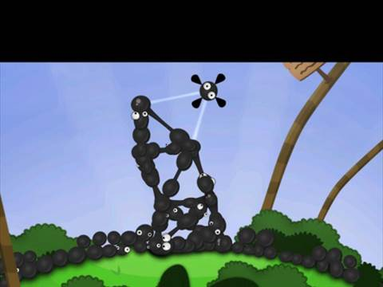

World of Goo is an accurate descriptor of the game housed within, for you do with your mouse take control of goo balls (many of which feature different abilities), pick them up and connect them together in order to construct jiggly architecture -- bridges, straightaways, makeshift high-rises, even -- so that you might lead other goo balls to an exit situated on one end of every stage. That's it. And while there are some variations to the formula, the experience largely holds true to those simple gameplay mechanics. Ingenious level designs, responsive control and at-times hilarious presentation combine together for an experience unmatched by any other WiiWare title to date.

Simple concept, executed to perfection. That's gaming 101, and it works.
You won't really know what's going on in this goo-filled world, but there are messages left behind by the Sign Painter, whose philosophical commentaries blend together with surreal out-of-game observations. At one point, you will stumble upon a message in which he unleashes a diatribe on the fact that the title doesn't run in high-definition. At another, he promises that there's a big change waiting in world four -- and fear not, we're keeping the spoilers to a minimum. These story shavings are slim, but this isn't really a game about a great yarn. What you will find in abundance, though, are gorgeous settings, serene music and funny sound effects from the goo balls. Goo features a sensational visual style that looks inspired by titles such as Loco Roco, but 2D Boy has taken the presentation to the next level with fabulous designs and animation. Wait until you happen upon the windmill level and come talk to us. You'll hardly believe you're still playing a downloadable game.
The graphical and aural finesse completes the package, but World of Goo's winning challenges are its finest feature. There are more than four worlds, each housing a chunky batch of unique stages, most with highly different objectives that always come back to very smartly utilizing the strengths and weaknesses of the goo balls. You'll learn the basics right away since you'll be required to construct a gooey pillar reaching to the stage exit up above. You exit the levels through pipes that suck the goo balls in and off to the next puzzling hurdle, a task not always easy. In fact, it's usually decidedly difficult. Take those first few stages, for instance, when the only goal is to reach the end without toppling your structure. Since all of the goo balls sport realistic physics, if you don't build your gooey connections thoughtfully and with respect to gravity, they will very likely come crumbling down and you will need to begin again. And as the levels advance, the obstacles only grow in size, sometimes literally. Remember that windmill level we mentioned -- the one that looks so good? Right. That windmill features collision detection, meaning you'll need to devise a way up and over it using your goo balls. If you get to close, it'll splatter those suckers.
Adding to the cleverness of the puzzles is the make-up of the goo balls themselves. Some are flammable, others aren't. Some can be connected and re-connected again and again, others can't. Some are firm, others elastic. Some even act as balloons. You'll place these latter goo balls at the tips of a string of goo in order to raise it up and over objects -- let us not forget that windmill, okay? Seriously. And when you start to dissect the strengths and weaknesses of each ball combined with the varying levels presented to you, you will see all the work that has gone into developing really smart, if not sometimes brutal designs. As a result, Goo is one of those titles -- and if you've been at videogames long enough you'll know exactly what I'm talking about -- that will constantly dazzle you with really intelligent puzzles and equally pleasing presentation. The type of project that makes you go, "Wow. That was really cool," when you finally feel your way out of the puzzle zone and to the exit pipe.
With four-plus worlds, each sporting nearly 10 stages a piece, the single-player mode will keep you busy for a long while depending entirely upon how smart you are with physics-based puzzles. Sometimes the answers aren't always so clear, a truth we learned again and again during a stage in which we needed to maneuver a series of standard black goo balls through an open flame without first igniting a bridge made of flammable goo balls. You might find yourself stuck for an hour on a single stage. Bearing all that in mind, I think there's a pretty good primary experience to be had with this title -- at least five hours and quite possibly twice that for differently skilled players. There's also a surprisingly functional multiplayer mode -- you and a friend can cooperatively play every level in the game and this option doesn't at all feel like a tacked-on gimmick, but something that works very well. And the title even features a welcomed leader board component. All of the extra goo balls you collect in levels can be displayed as something of a scoreboard -- virtual skyscrapers of goo -- for your friends to see online.
So what's missing from the package? Really, not much. The camera is entirely controlled by the mouse -- you simply point around different portions of the screen to drag your viewpoint. It works well, but I often wished I could zoom in or out of the play field with the mouse, too, as it would have saved a lot of drag time. Meanwhile, there's no level editor with the PC version of Goo and a game of this type screams for user created content.
The Verdict
World of Goo is an amazing downloadable PC game that you simply must buy. It's packed full of brilliant, challenging levels. It's gorgeous. It's got beautiful music. And it controls really well. So if you value any or all of these qualities, and hopefully you do, you should not hesitate to add it to your My Games List via Steam.